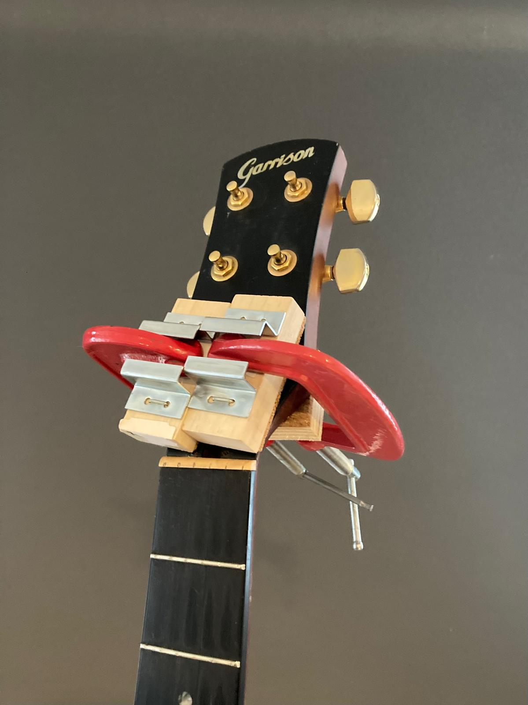
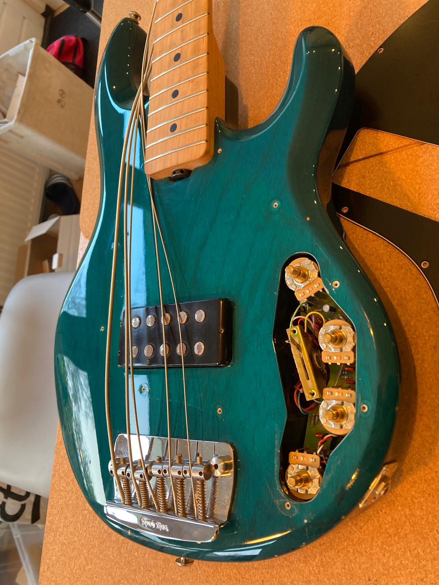
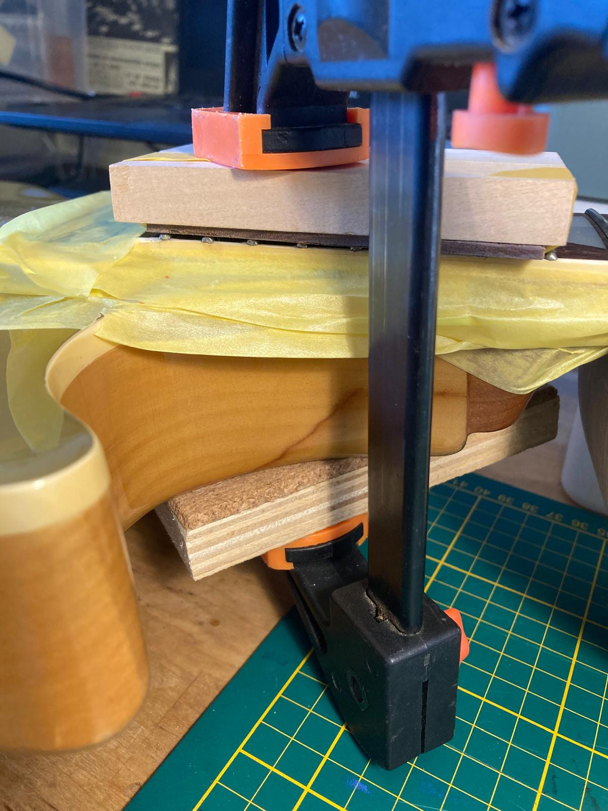
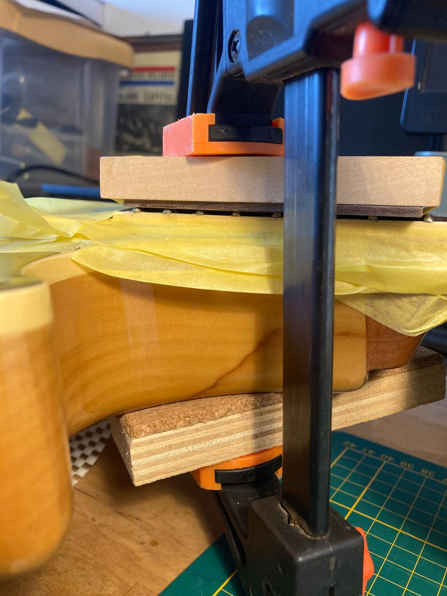

Reparatie van elektrische gitaren, akoestische gitaren en basgitaren.
Van het lijmen van een gebroken hals tot het oplossen van elektronische storingen
in een actieve basgitaar waar geen geluid meer uit komt.
Ook voor fretwerk kun je terecht, bijvoorbeeld bij uitstekende frets (fret sprout),
losse frets of frets die opnieuw geklemd en gelijmd moeten worden.
Iedere reparatie wordt zorgvuldig en in overleg uitgevoerd met nadruk op speelbaarheid van de gitaar.
Zie de foto’s voor voorbeelden. Heb je een probleem met je gitaar, neem gerust contact met me op.
Een breuk in de kop van de gitaar gelijmd en geklemd.

Na 24 uur drogen en verwijderen van lijmresten is de reparatie klaar.
Een goede fix die ervoor zorgt dat de gitaar weer terug het podium op kan.
De basgitaar is defect, er komt geen geluid meer uit. Dus nakijken waar het probleem zit.

Het probleem was de aansluiting van de batterij.
Dit is opgelost door nieuwe bedrading naar batterij

Uitstekende frets waardoor de hoge e snaar soms klem komt te zitten.
De oplossing was een specifiek hout blokje maken, die radius van de frets volgt
waarmee de klem vooral de uiteinden van de frets drukt.

Bescherm met kurk, tape en wax op de toets, zodat er geen lijm op de toets achterblijft,
lijm onder de frets en klemmen.